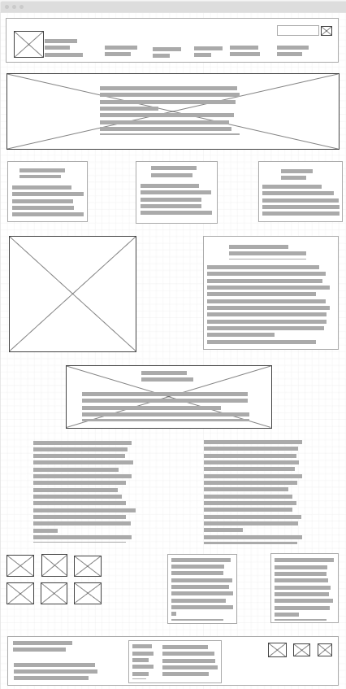
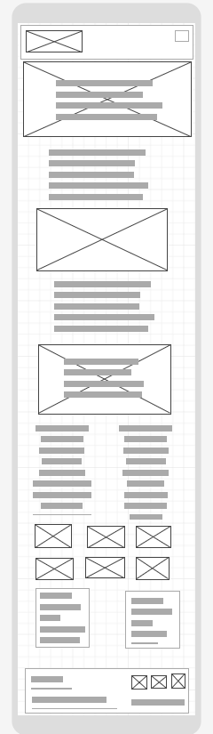

Name: Tseaddo Business Chamber
Reason for Selection: The site name "Tseaddo Business Chamber" was chosen because it represents a sub-metropolitan area known as La within city of Accra, the capital of Ghana, where the chamber operates.It conveys a collective body that fosters business development, networking, and support for enterprises within La sub-metropolitan. Including the word "Chamber" emphasizes its role as a central hub for local businesses.
Choosing a suitable domain name for this site could be www.tseaddobusinesschamber.com. This domain is essential since it accurately captures the site's location (Tseaddo) and goal (business chamber).
Because of the significant amount of business and influential residents, the Tseaddo Business Chamber website aims to give local enterprises a digital platform for networking, collaboration, and resource access. It will act as a central information hub for tseaddo and La sub-metropolitan businesses and organizations, providing news, events, and services.
The Tseaddo Business Chamber website is designed to serve the business community in Tseaddo, La sub-metropolitan . The primary goals of the site are:
The website will offer a venue for local companies to network, cultivate alliances, exchange possibilities, and encourage business-to-business (B2B) cooperation. Networking between business owners and companies in the La sub-metropolitan will be facilitated by the website's communication channels and business.
A comprehensive repository of information, including business events, government policy updates, training opportunities, and industry news, will be provided on the website. For both new and established businesses, it will also give access to services including membership registration, business advice support, and marketing help.
A space that will act as a fearless defender of business as we promote laws that permit companies to locate, grow, and thrive in the various regions we assist. The Chamber considers a robust economy to make prosperity possible for all. The business community interacts with legislators and civic leaders through the Tsaddo Chamber to promote economic success, mobility, and equity.
The Tseaddo Business Chamber's target audience is represented by the following scenarios, which are representative of frequently asked inquiries from site visitors:
We host a variety of events that highlights business-to-business networking events, workshops, and seminars hosted by the chamber. Check out our Annual Events for a full list.
Visit the membership section, outlining how to apply for membership, membership tiers, and the associated benefits such as business support, visibility, and networking opportunities.
Companies join a chamber of commerce to increase their organization's visibility, access to business and community leaders and to invest in the future of their community.
Visit advertising or sponsorship section on the website, it allows businesses to promote their services or products through the chamber's platforms or sponsored events.
Current members can submit news articles to be posted on our website. Approved news articles will be visible at WichitaChamber.org/News and a link to recent news will be included in the Chamber's weekly eSynergy newsletter.
The color palette of the Tseaddo Business Chamber website emphasizes the blue family to stand for professionalism, stability, and trust. Three chosen blue hues and how they are used throughout the website are shown below.
Usage: Navy blue will be used for the main headings, navigation bar, and footer background. It represents professionalism and reliability, which is key to the chamber's role in supporting the local business community.
Usage: Sky blue will be used for accent elements such as call-to-action buttons, icons, and highlighted sections. It symbolizes openness and communication, representing the chamber's goal of creating connections and opportunities for local businesses.
Usage: Light blue will be used as the background color for content sections, sidebars, and form elements. It provides a fresh, clean look that enhances readability while maintaining consistency within the blue family.
The Tseaddo Business Chamber website will employ a readable, tidy, and polished font family in all of its sections. The chosen fonts and their intended uses are listed below:
Usage: Roboto will be used for the main body text and paragraphs. It's a modern, sans-serif font that provides excellent readability on both desktop and mobile devices. Its clean lines help maintain a professional yet approachable tone throughout the site.
Usage: Montserrat will be used for headings (H1, H2, H3) and subheadings. Its a bold, geometric sans-serif font that gives the site a modern and strong appearance, helping important sections stand out clearly to visitors.
Usage: Lora will be used for special sections like quotes or testimonials. Lora is a serif font that adds a touch of elegance and personality, providing contrast with the primary sans-serif fonts.
Create two wireframes for your site home page which is mobile view and large screen view. One of each home page frameowrk is listed here.
[Any additional details about home that the wireframe does not make clear]
 